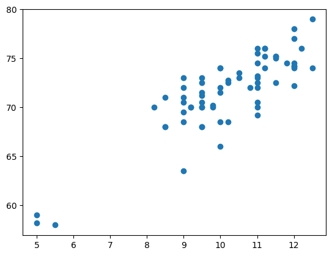
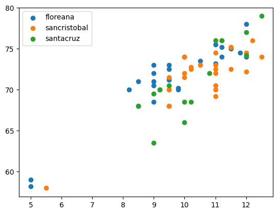
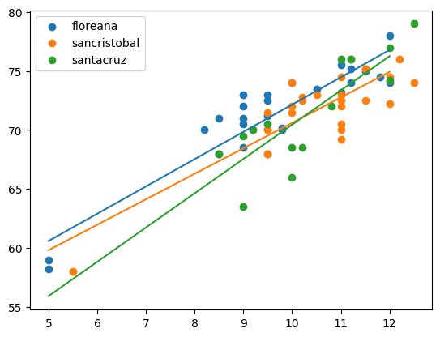

import matplotlib.pyplot as plt
import numpy as np
import pandas as pd
import statsmodels.api as sm # pip install -U statsmodels patsy
import statsmodels.formula.api as smf
import patsy as pt df = pd.read_csv("https://raw.githubusercontent.com/roualdes/data/refs/heads/master/finches.csv")df.head()| island | winglength | taillength | beakwidth | beakheight | lowerbeaklength | upperbeaklength | tarsuslength | middletoelength | |
|---|---|---|---|---|---|---|---|---|---|
| 0 | santacruz | 63.5 | 40.0 | 9.0 | 11.0 | 9.0 | 16.0 | 20.0 | 18.5 |
| 1 | santacruz | 69.5 | 41.0 | 9.0 | 12.0 | 8.5 | 16.0 | 21.2 | 19.5 |
| 2 | santacruz | 70.0 | 44.0 | 9.2 | 12.0 | 8.5 | 16.0 | 21.0 | 18.6 |
| 3 | santacruz | 70.0 | 43.5 | 9.2 | 11.2 | 8.5 | 16.2 | 20.5 | 19.0 |
| 4 | santacruz | 70.5 | 42.0 | 9.5 | 12.0 | 8.5 | 16.5 | 22.0 | 19.2 |
plt.scatter(df["beakwidth"], df["winglength"]);
y, X = pt.dmatrices("winglength ~ island + beakwidth", data = df) # design matricess
X[20:40]array([[ 1. , 1. , 0. , 10. ],
[ 1. , 1. , 0. , 10.2],
[ 1. , 1. , 0. , 11. ],
[ 1. , 1. , 0. , 10.5],
[ 1. , 1. , 0. , 11. ],
[ 1. , 1. , 0. , 10. ],
[ 1. , 1. , 0. , 12. ],
[ 1. , 1. , 0. , 11. ],
[ 1. , 1. , 0. , 11. ],
[ 1. , 1. , 0. , 9.5],
[ 1. , 1. , 0. , 11. ],
[ 1. , 1. , 0. , 10.2],
[ 1. , 1. , 0. , 12. ],
[ 1. , 1. , 0. , 11.5],
[ 1. , 1. , 0. , 11.5],
[ 1. , 1. , 0. , 11.2],
[ 1. , 1. , 0. , 12. ],
[ 1. , 1. , 0. , 12.2],
[ 1. , 1. , 0. , 12.5],
[ 1. , 1. , 0. , 11.5]])model = smf.ols("winglength ~ island * beakwidth", data = df)
fit = model.fit()fit.summary()| Dep. Variable: | winglength | R-squared: | 0.771 |
|---|---|---|---|
| Model: | OLS | Adj. R-squared: | 0.753 |
| Method: | Least Squares | F-statistic: | 41.82 |
| Date: | Thu, 13 Nov 2025 | Prob (F-statistic): | 1.30e-18 |
| Time: | 13:49:11 | Log-Likelihood: | -140.68 |
| No. Observations: | 68 | AIC: | 293.4 |
| Df Residuals: | 62 | BIC: | 306.7 |
| Df Model: | 5 | ||
| Covariance Type: | nonrobust |
| coef | std err | t | P>|t| | [0.025 | 0.975] | |
|---|---|---|---|---|---|---|
| Intercept | 49.0160 | 2.211 | 22.172 | 0.000 | 44.597 | 53.435 |
| island[T.sancristobal] | -0.0065 | 3.812 | -0.002 | 0.999 | -7.627 | 7.615 |
| island[T.santacruz] | -7.6337 | 4.943 | -1.544 | 0.128 | -17.514 | 2.247 |
| beakwidth | 2.3143 | 0.226 | 10.229 | 0.000 | 1.862 | 2.767 |
| island[T.sancristobal]:beakwidth | -0.1547 | 0.367 | -0.421 | 0.675 | -0.889 | 0.579 |
| island[T.santacruz]:beakwidth | 0.5926 | 0.484 | 1.226 | 0.225 | -0.374 | 1.559 |
| Omnibus: | 7.089 | Durbin-Watson: | 2.007 |
|---|---|---|---|
| Prob(Omnibus): | 0.029 | Jarque-Bera (JB): | 3.781 |
| Skew: | -0.362 | Prob(JB): | 0.151 |
| Kurtosis: | 2.100 | Cond. No. | 256. |
Notes:
[1] Standard Errors assume that the covariance matrix of the errors is correctly specified.
for name, gdf in df.groupby(["island"]):
plt.scatter(gdf["beakwidth"], gdf["winglength"], label = name[0]);
plt.legend();
xnew = np.array([5, 12])
ndf = pd.DataFrame.from_dict({"beakwidth": xnew,
"island": ["floreana", "floreana"]})
ndf["yhat"] = fit.predict(ndf)
ndf| beakwidth | island | yhat | |
|---|---|---|---|
| 0 | 5 | floreana | 60.587695 |
| 1 | 12 | floreana | 76.788024 |
for name, gdf in df.groupby(["island"]):
plt.scatter(gdf["beakwidth"], gdf["winglength"], label = name[0]);
xnew = np.array([5, 12])
ndf = pd.DataFrame.from_dict({"beakwidth": xnew,
"island": [name[0], name[0]]})
ndf["yhat"] = fit.predict(ndf)
plt.plot(xnew, ndf["yhat"])
plt.legend();